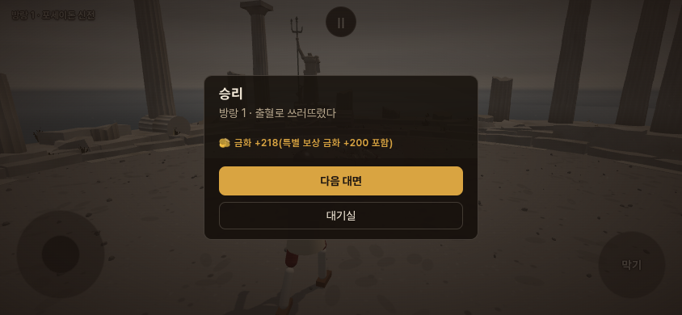
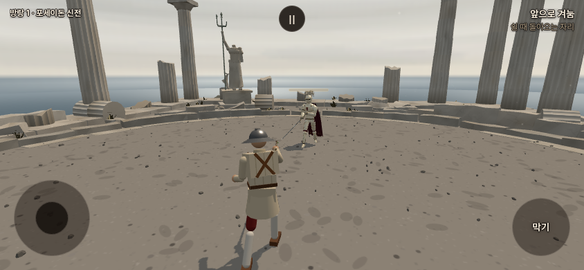

STILLNESS · 전체 클리어 이후
방랑
익숙한 장소에서, 뜻밖의 검객과 마주합니다.
무대와 상대를 각각 무작위로 골라 대면을 이어갑니다. 이름은 아직 작업명입니다.
체험판은 방랑이 열린 대기실에서 시작합니다. 본래 게임의 금화·아이템·스테이지 기록과 별도로 저장됩니다.
실제 모바일 화면 · 기존 Stage 입장 아래에 방랑을 따로 배치했습니다.
대면과 보상
- 일반 무대 전체 클리어 후 개방됩니다.
- 승리 금화 10~30, 참수 재화 2개. 패배 차감은 기존 1~5금화입니다.
- 아르토리아·세바스티앙 승리 시 금화 200 추가.
- 몽골 장수 ‘백린의 전사’ 승리 시 목 5개 추가. 참수 여부와 무관합니다.
- 이기면 다음 대면, 패배하면 방랑 종료. 도중에 대기실로 돌아오면 이어갈 수 있습니다.

보상 표시 확인 화면 · 승리 상태를 재현해 지급·저장 연결을 검증했습니다.
특별한 상대부터 만나기
첫 대면만 지정한 상대로 시작합니다. 그다음부터는 무작위입니다. 각 버튼은 체험용 연속 대전을 새로 시작합니다.

실제 게임 장면 · 전용 무대에 묶이지 않는 대면입니다.